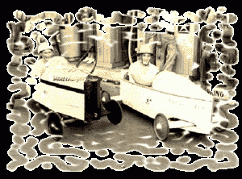
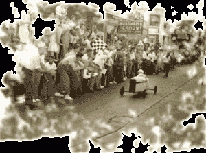
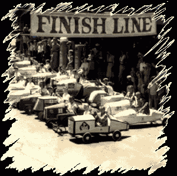

Une caisse à savon, au départ c’est un véhicule pour enfant composé d’un châssis, de quatre roues, de deux axes dont un est mobile. Pour trouver la première caisse a savon, il faudrait sans doute remonter a l’invention de la roue, mais la premiere course de caisse a savon remonte en 1904 en Allemagne. Venu assister a la course de GORDON-BENNETT les amateurs de courses automobiles virent soudain surgir d’une ferme deux jeunes garçons munis d’un objet bizarre : il avait 1,50m de long , 4 roues, un axe avant mobile et a l’avant une caisse qui ressemblait a un capot de voiture.
L’un des garçons s’installe au volant, l’autre se mit a pousser l’engin, a se jeter devant dans les descentes pour servir de frein. Le lendemain, on vit surgir une deuxieme puis une troisieme voiture. Tous voulaient, comme leurs grands aînés être le plus rapide. Cela donna l’idée aux concurrents de la GORDON-BENNETT d’organiser une course pour ces drôles de machines. La première course de caisses a savon était née. On y admira non seulement la rapidité des engins mais aussi leur ingéniosité, leur beauté.
C’est au États-Unis en 1933, que les caisses a savon prennent un essor mondial. En pleine période de développement de l’automobile, un astucieux commerçant eut l’idée de joindre a l’emballage de ses savons réalisés a l’époque en planche de bois, le plan d’une voiture simple a construire et ajoute quelques pièces métalliques de fixation pour parfaire la construction. En quelques mois les jeunes constructeurs de SOAP BOX (CAISSES A SAVON) se comptent par milliers. La caisse a savon s’était trouvé un nom. On peut voir dans tout le pays des petits bolides dévaler les rues en pente. Un journaliste du DAYTON DAILY NEWS (Ohio) s’intéresse au phénomene et décide d’organiser une course. Son journal assure le lancement de la manifestation et c’est devant 40 000 personnes que la premiere course aura lieu le 19 Août 1933. Une organisation des courses se constitue : ALL AMERICAN SOAP BOX DERBY.
L’Europe s’intéresse aux compétitions de caisses a savon des l’apres guerre. C’est certainement une des conséquences inattendues de l’occupation des territoires allemands par les troupes américaines. Comme aux État-Unis, les grandes marques de voitures allemandes s’intéressent et encouragent les constructions et les courses. En France c’est en 1950 a l’initiative de l’Automobile Club Français, de la régie RENAULT et de l’agence HAVAS avec le soutien du journal l’ARGUS DE L’AUTOMOBILE que se crée le premier DERBY AUTOMOBILE des moins de 15 ans. Cette épreuve ouverte a tous les futurs champions obligeaient ceux ci a construire de leurs mains leurs caisses a savon. Les roues et pneumatiques étant fournis par la société DUNLOP. A l’issue de sélections régionales fort spectaculaire a Chartres, Charleville-Mézieres, Orléans, Rouen, Metz, etc… une finale nationale se déroula le 22 juillet 1950 a Paris sur une piste en bois de 400 m de long sur 8 m de large construite pour la circonstance au Parc des expositions. Le vainqueur se vit remettre une vraie 4CV. Éclaté régionalement et notamment dans les régions montagneuses (Vosges, Alpes, Jura) la caisse a savon se trouve aux alentours des années 1980 un second souffle. Activités éducatives pour les uns, loisirs de groupes pour les autres, sport familial ou animations de village la caisse a savon se cherche, s’invente, se réglemente et se rassemble. A l’initiative de militants de l’enfance et de la ville de Vénissieux (Rhône) un prix national vu le jour en 1981. Les FRANCAS donnent rapidement les moyens de développer ces activités dans les centres de loisirs. Les prix départementaux se multiplient. Un comité national voit donc le jour permettant de réunir sur une seule structure toutes les tendances de la caisse a savon, permettant aussi l’organisation d’un championnat de France des 1984. Celui-ci servant de sélection au championnat d’Europe mis en place.
En Lorraine la commune de Saint Maurice sur Mortagne ouvre la voie en organisant le 17 juin 1990 sa première course. Suivant l’exemple, Thiéfosse, Deyvillers, Fremifontaine, Evaux et Ménil, Cleurie et Frizon préparent a leur tour leur propre manifestation attestant de l’engouement des lorrains pour le plaisir des sports gravitationnels. Le 5 avril 1995 le Comité Lorrain de caisses a savon (COLOCAS) voit le jour a l’initiative des associations organisatrices de courses de Lorraine. En deux ans ce comité fort dynamique va organiser plus de 50 manifestations autour de la caisse a savon. Le COLOCAS rejoint en 1996 le Comité National Français et se place aujourd’hui fort de ses 100 membres actifs et de plus de 200 pilotes dont de nombreux champions de France, comme le plus gros comité régional français.